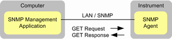

The R&S CMW is equipped with an SNMP agent. The agent allows you to monitor an R&S CMW via the simple network management protocol (SNMP).
Use an SNMP management application of your choice to query instrument information from the SNMP agent via SNMP messages. The computer where the management application is running and the R&S CMW must be connected via LAN.

A possible use case of SNMP monitoring is to search for an idle instrument in a network with many instruments. Search for an instrument that has zero active tasks and no remote control connections.
Processing SNMP messages is independent from other tasks. You can query variables from the SNMP agent at any time, without disturbing running measurements or interfering with manual control or remote control of the instrument.
Monitoring via SNMP uses an SNMP service provided by the test software. The SNMP service of the Windows operating system must be disabled. Otherwise, monitoring via SNMP does not work. |